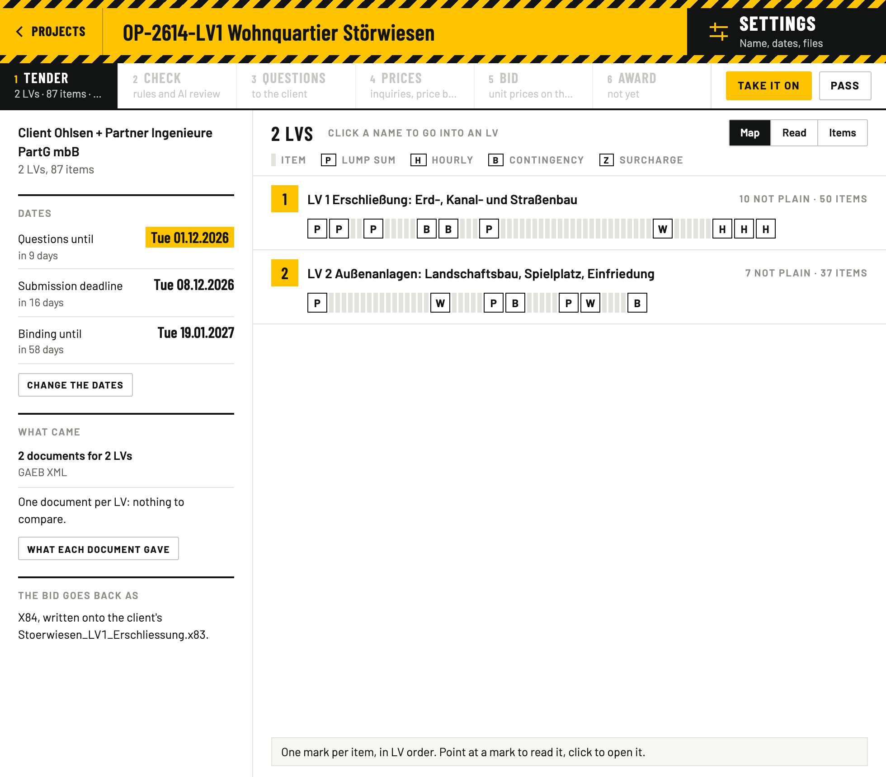

Panel
A · Kayıt
B · Telsiz
C · Kart
Dipnotlar
Durum
Kapalı
Davet
Yazarken
Okuyor
Cevap
Bulamadı
← yeni: panel dünyaları

Ask Polier
Close
About
Wohnquartier Störwiesen
2 documents · 87 items
Ask
Ask